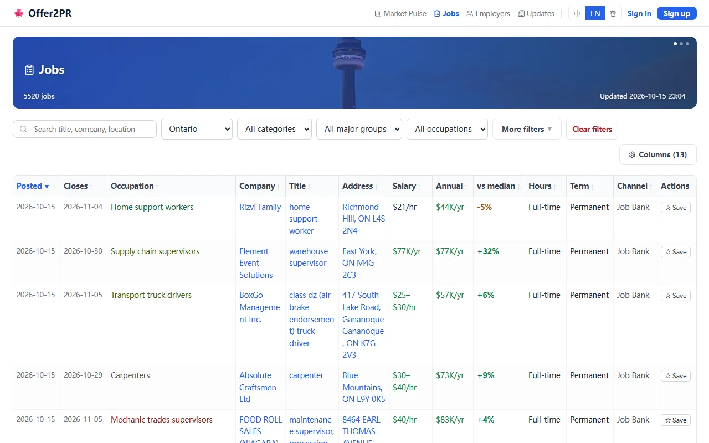
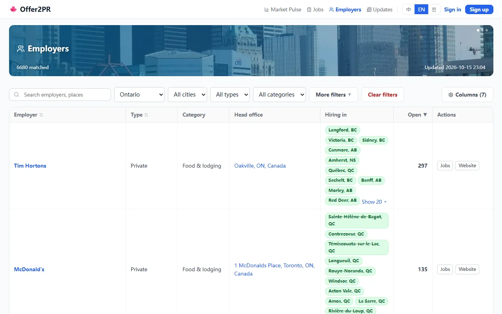

Offer2PR
A daily-updated Canadian job board with 24,000+ live postings from 30 sources across all 10 provinces, tagged with immigration signals; in English, Chinese and Korean.
- Role: Founder: AI Agent Development & Operations
- Organization: offer2pr.com, Ottawa, ON
- Dates: Jun 2026 – Present
- Stack: AI agents, Claude API, TypeScript, Next.js, Payload CMS, PostgreSQL, Python, Docker, Render, Cloudflare
- Live site: https://offer2pr.com
- Source code: https://github.com/zhizhunbao/pnp-job-tracker
What it does
A job board for people in Canada who need an employer offer or a provincial nomination on the way to permanent residence. Every posting carries immigration signals:
- a rough PNP eligibility flag (TEER 0–3 or a shortage list)
- pay compared with the median wage for the occupation
- whether the employer is designated or has LMIA history
The job board filters by province, occupation, pathway and experience. The employer board ranks employers and shows where they are hiring.

Job board on offer2pr.com

Employer board on offer2pr.com
How it's built
- Python ETL: crawl → raw → processed → mart, then a loader fills PostgreSQL. Sources include Job Bank (all 10 provinces), Jobillico, Jobboom, GC Jobs, CareerBeacon and selected employer career sites. Jobs refresh every hour.
- Operations: the ETL runs unattended in Docker on a self-managed host, about 60 containers; see below.
- Web: Next.js + Payload CMS + PostgreSQL on Render, DNS on Cloudflare.
- CI: GitHub Actions type-checks and lints every push; a local pre-push hook adds Python lint, type checks and a build.
AI agents in the product
- Advisor agent (Aug – Sep 2026). A tool-calling agent with 9 tools (occupation search, job lookup, draw history, thresholds, points and more). Its rules: it never decides, ranks or computes, and every number in an answer must appear in a tool result. An output gate rewrote drafts that broke the rules, answers cited their sources, and the tool trace streamed to the page. A 24-case gold set plus real user questions served as the evaluation.
- Site guide (live since Sep 2026). When the advisor was more than the job needed, I replaced it with a two-step guide on Claude Haiku: one structured call routes the question to the right page, and an optional second call answers only from database facts, with daily quotas to cap cost.
- Occupation resolver. An agent with search, slot-filling and give-up tools that rejects any occupation code the search didn't return, covered by 21 integration tests.
- Cover letters. One grounded call per job, from the job ad and the chosen résumé, with a switchable model provider and a daily limit.
How I operate it
- One unit, one container, one check. Each ETL unit (about 60) runs in its own container with
restart: unless-stoppedand its own schedule: Job Bank every hour, the build step right after each Job Bank round, the database backup once a day. A failing unit turns red on its own instead of hiding behind its neighbours. - Monitoring. A self-hosted healthchecks service (the hosted free tier stops at 20 checks) has one check per unit. Each unit pings after every successful round and sends an explicit failure, with the error lines, after 30 minutes of continuous failure. A separate freshness check passes only when the whole fleet's data is fresh, and a few checks on hosted healthchecks.io act as the alarm if the whole host goes down. Alerts arrive by email.
- Data safety. A daily
pg_dumpof production, with 14 days kept. Crawl ledgers are written only after a clean finish, and the mart has a fuse that holds back incomplete data instead of publishing it. - Release gates. A pre-push hook runs ruff, pyrefly, a structure check and eslint; GitHub Actions runs type checks and lint with a suppression baseline that can only shrink. The web app deploys on push to Render, and I confirm each deploy by checking the live
/api/versionagainst the commit.
Incidents and fixes
- Missing Job Bank postings (Oct 2026). An audit of 425 live postings found 28 missing from the board. The parse step was dropping about 350 older rows per round, and postings marked dead never came back. I added a daily full sweep per province and a revive path for postings that reappear. Misses went from 28 to 3 of 425 (2 waiting out a cooldown, 1 truly expired), and open postings went from 63,857 to 73,723.
- Bot-check fallback poisoning the cache (Oct 2026). When a direct fetch got HTTP 403 and the browser fallback succeeded, the page was still recorded as 403, which invalidated the cache for a whole government site. Fixed the status recording and now reject fallback pages that are only a bot check.
- Slow self-check (Oct 2026). Reusing the crawl manifest for 30 seconds cut the pathways self-check from 1,376 s to 102 s.